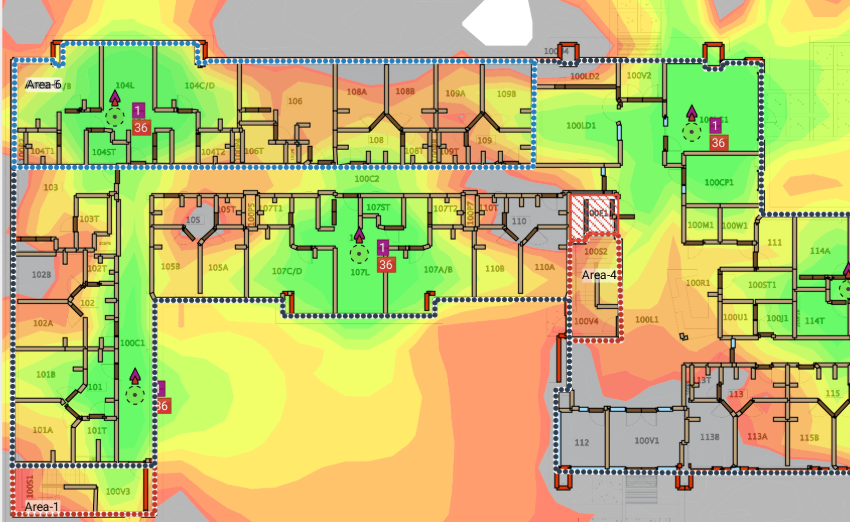

Supervision des imprimantes et observation des tests de couverture Wi-Fi
1. Introduction
Au cours de mon stage chez STS Composite, j’ai eu l’opportunité de participer à plusieurs missions liées à la supervision et à l’optimisation des infrastructures IT. Parmi celles-ci, deux interventions ponctuelles se sont révélées particulièrement intéressantes : l’intégration d’imprimantes dans l’outil de supervision Centreon et l’observation d’une campagne de tests de couverture Wi-Fi dans l’usine. Ces activités m’ont permis de mieux comprendre l’importance de la surveillance proactive et de la fiabilité du réseau dans un environnement industriel.
2. Supervision des imprimantes avec Centreon
La première mission a consisté à intégrer certaines imprimantes réseau dans Centreon, un logiciel de supervision déjà utilisé par l’entreprise pour ses serveurs et équipements critiques. L’objectif était d’étendre la surveillance aux périphériques d’impression afin d’anticiper les incidents et de limiter les interruptions de service.
2.1. Contexte
Dans un site industriel, les imprimantes jouent un rôle essentiel, notamment pour la logistique (bons de commande, étiquettes de production, bons de livraison, etc.). Une panne d’imprimante peut ralentir ou bloquer certaines étapes de la chaîne de production. Jusqu’alors, les équipes techniques devaient souvent attendre un appel d’utilisateur avant d’intervenir. L’intégration des imprimantes dans Centreon visait donc à passer d’une gestion réactive à une gestion proactive.
2.2. Intégration dans Centreon
J’ai participé à la configuration en :
- identifiant les imprimantes réseau à surveiller et en relevant leurs adresses IP,
- ajouter les imprimante au réseau du site correspondant et définir à quel niveau du toner les alertes se apparaissaient,
- suivi des alertes sur Centreon.
2.3. Résultats et bénéfices
Grâce à cette supervision, les équipes IT peuvent désormais être alertées en temps réel avant même que les utilisateurs ne soient impactés. Cela permet :
- d’anticiper les pannes et de préparer un remplacement de consommables à l’avance,
- d’éviter les blocages liés aux files d’impression saturées,
- d’avoir une vision centralisée de l’état du parc d’imprimantes.
Ce travail m’a permis de mieux comprendre l’importance d’un outil de monitoring dans la gestion quotidienne d’un parc informatique.
3. Observation des tests de couverture Wi-Fi
La deuxième mission consistait à observer une campagne de tests visant à mesurer et cartographier la couverture Wi-Fi dans l’usine. L’objectif était de repérer les zones où le signal était faible ou instable afin d’optimiser la connectivité des terminaux utilisés par les opérateurs.
3.1. Méthodologie
Le test reposait sur l’utilisation d’un pistolet scanner, un appareil habituellement utilisé pour lire les codes-barres. Cet appareil était connecté au Wi-Fi et couplé à un logiciel capable de réaliser des relevés de signal. Le processus était le suivant :
- l’opérateur se déplaçait dans différents ateliers et entrepôts,
- à intervalles réguliers, il marquait un point sur un plan numérique,
- à chaque point, une mesure de la puissance du signal et de la qualité de connexion était enregistrée,
- les données collectées servaient ensuite à générer une cartographie complète de la couverture Wi-Fi.
3.2. Analyse et constats
Les résultats ont mis en évidence plusieurs points :
- certaines zones proches des bureaux bénéficiaient d’un signal excellent,
- dans certains ateliers plus éloignés, le signal était instable voire inexistant,
- les obstacles physiques (murs épais, machines industrielles, structures métalliques) avaient un impact direct sur la qualité de réception.
3.3. Importance de la couverture Wi-Fi
Dans une usine moderne, de nombreux outils (pistolets scanners, tablettes, terminaux mobiles) reposent sur le Wi-Fi pour fonctionner correctement. Une mauvaise couverture peut entraîner des pertes de temps, des erreurs de suivi logistique, ou encore des ralentissements dans la production. Ces tests sont donc essentiels pour planifier l’ajout de nouveaux points d’accès ou pour optimiser l’emplacement de ceux déjà installés.
Exemple de schéma de wifi (pas de l'entreprise)

Cette expérience m’a permis de comprendre les enjeux liés à la connectivité dans un environnement industriel et l’importance d’une bonne planification pour garantir une couverture Wi-Fi optimale.
4. Conclusion
Ces deux missions m’ont permis de découvrir deux aspects complémentaires de l’administration système et réseau :
- la supervision proactive avec Centreon, qui garantit la disponibilité et la continuité des services,
- l’optimisation du réseau Wi-Fi, indispensable dans un environnement industriel connecté.
Au-delà des aspects techniques, elles m’ont sensibilisé à la nécessité d’une vision globale : la supervision assure la réactivité des équipes IT, tandis que la cartographie Wi-Fi permet d’anticiper les besoins futurs. Ces expériences, bien que ponctuelles, ont enrichi mon stage et renforcé mon intérêt pour les métiers liés aux infrastructures IT.